DIARY
EXIBITION
October - November
- Collégiale des luthiers Angers france
lien: http://www.collegiale-saint-martin.fr
http://www.cg49.fr/culture/expo_lutherie/collLA_madeInCollegiale.html
-la Bellevilloise 19-21, rue Boyer 75020 Paris 29 et 30 Novembre
FORTHCOMMING COURSE
This course (3 or 5 days ) offers a quick learning of the violin drawings techniques .
- Madrid du 7 au 9 Novembre 2014
Contact : infolutherie@gmail.com
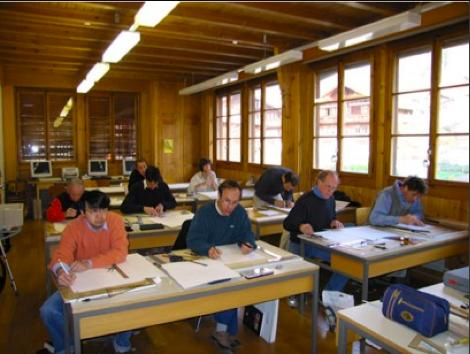
Brienz School of Instrument Making 2005
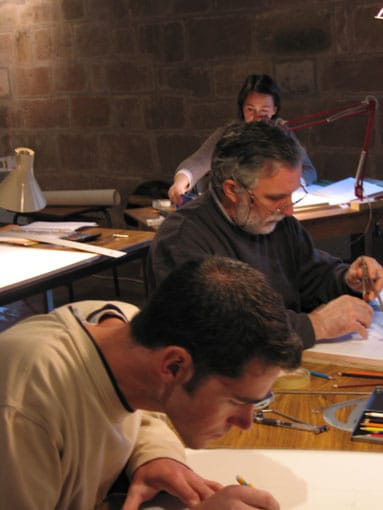
Cordes-sur-ciel 2005
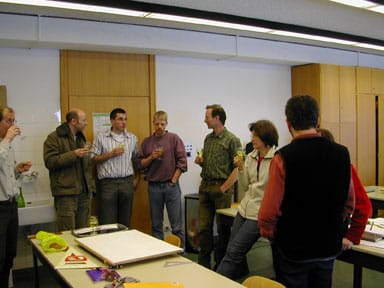
Mittenwald 2005
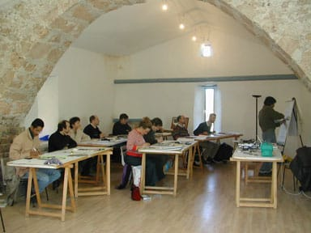
Montpellier 2004
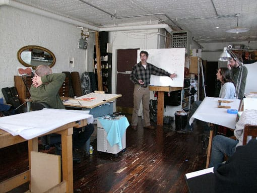
New-York 2006
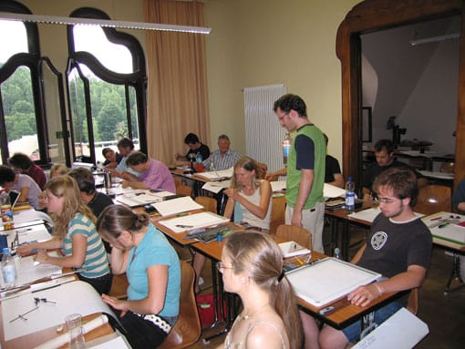
Markneukirchen 2006
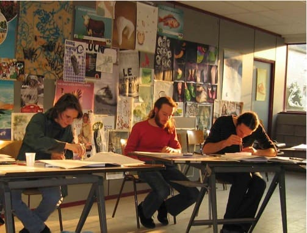
Bruxelles 2007
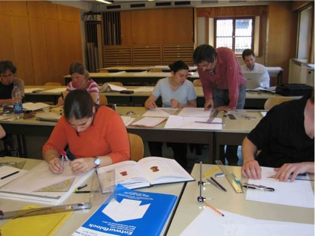
Mittenwald 2007
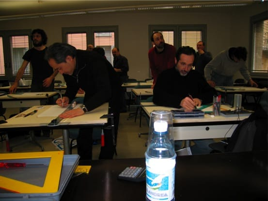
Cremona 2008
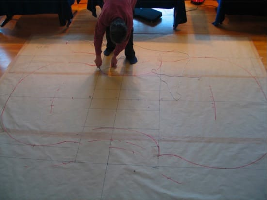
Stuttgart 2008, performance during the Klanggestalten exhibition
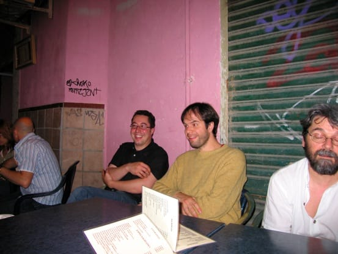
Lecture Malagua June 2008
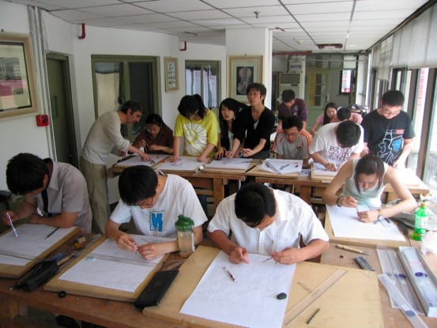
Drawing course in Benjin June 2009
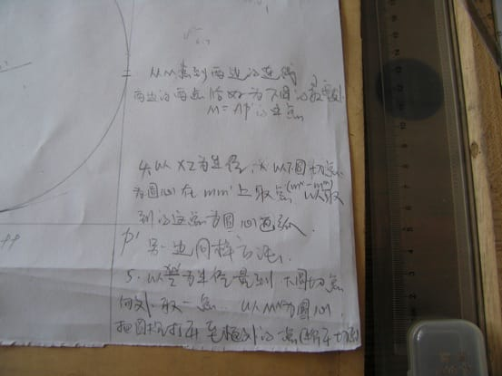
Stradivarius secret receipe...in chinese!
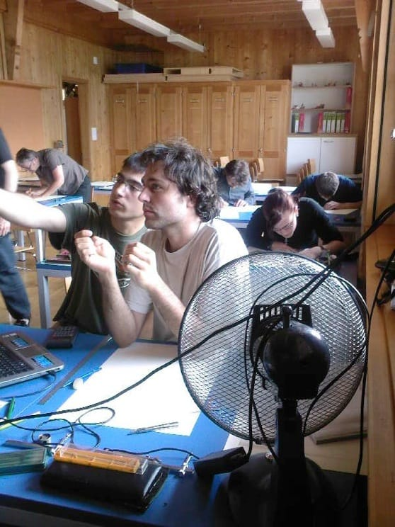
Violin making school of Brienz June 2010
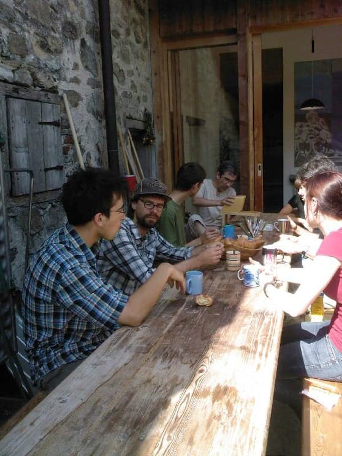
Break time at the Brienz school Suitzeland; the « cheese shaving »
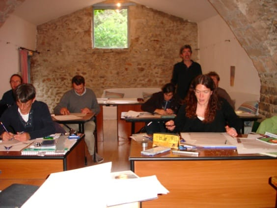
Saint-Martin de Londre France 2011
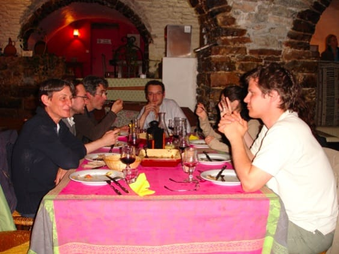
Course Saint-Martin de Londre France 2011
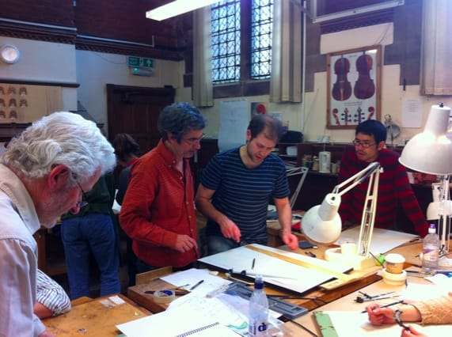
Newark violin making school England April 2012
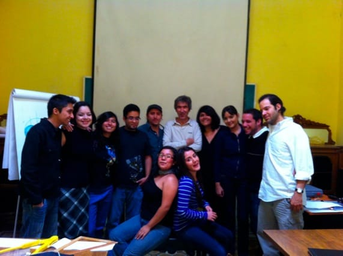
Violin Making school Quérétaro Mexico Novembre 2012
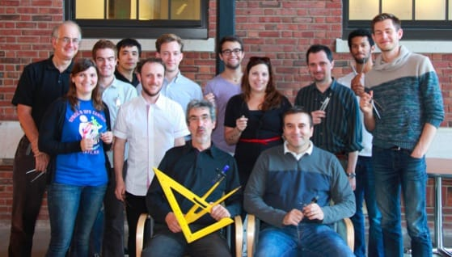
Course North Bennett school à Boston US 2014